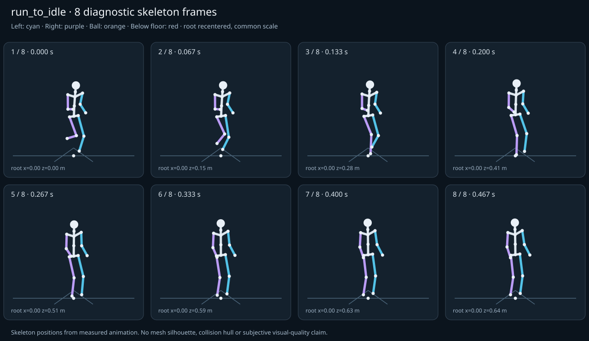

כל הקליפים · תצוגת התנועה · JSON המקור
ציון 88.3 · כיסוי 100%
הסוליות נמדדות בתרחיש תנועה חיצוני מוצהר; Root בנכס נשאר קבוע. הרציפות משתמשת בפוזה המקומית.

| מדד | מצב | ערך | ציון | ראיות |
|---|---|---|---|---|
| החלקת רגליים | ירוק | 0.000805 | 98.39 | ראיות מקוריות{
"coordinateSpace": "native GLB plus explicitly declared external actor position and heading, applied once",
"supportSource": "declared",
"windows": 3,
"samples": 75,
"maxDriftMeters": 0.001361,
"p95SpeedMetersPerSecond": 0.114732,
"worst": {
"bone": "LeftFoot",
"t": 0.416667,
"start": 0.233333,
"end": 0.466667,
"driftMeters": 0.001361
}
} |
| חדירה לרצפה | ירוק | 0 | 100 | ראיות מקוריות{
"samples": 1140,
"floorY": 0,
"probeKind": "declared sole probes plus skeletal joint centers (no mesh surfaces)",
"maxDepthMeters": 0,
"worst": {
"t": 0.466667,
"bone": "RightFoot",
"depthMeters": 0,
"y": 0
}
} |
| קפיצות פוזה | צהוב | 1.195551 | 76.09 | ראיות מקוריות{
"adjacentPairs": 56,
"observations": 952,
"maxDegrees60Hz": 12.099081,
"maxMarkerStepHeight60Hz": 0.047822,
"maxRootStepHeight60Hz": 0.021694,
"worst": {
"ratio": 1.1955507896917583,
"t": 0.033333,
"previousTime": 0.025,
"bone": "RightLeg",
"markerStepHeight60Hz": 0.047822,
"degrees60Hz": 5.341087
}
} |
| חריגות אנטומיות | ירוק | 0 | 100 | ראיות מקוריות{
"testedFrames": 57,
"affectedFrames": 0,
"checks": 969,
"maxLimbFlexionDegrees": 123.946708,
"maxRelativeSegmentLengthChange": 0,
"hingeDirectionChecked": true,
"axialTwistChecked": false,
"violations": []
} |
| מגע בכדור | לא חל | — | — | ראיות מקוריות{} |
| כניסה ויציאה מול המתנה | צהוב | 1.816461 | 67.75 | ראיות מקוריות{
"entry": {
"ratio": 1.816460934218455,
"t": 0,
"idleTime": 3.866667,
"markers": 17,
"rmsPositionHeight": 0.072658,
"rmsRotationDegrees": 27.250477,
"rmsVelocityHeightPerSecond": 1.108147,
"velocityEvaluated": true
},
"exit": {
"ratio": 4.206467441920244e-7,
"t": 0.466667,
"idleTime": 0,
"markers": 17,
"rmsPositionHeight": 0,
"rmsRotationDegrees": 0.000001,
"rmsVelocityHeightPerSecond": 0,
"velocityEvaluated": true
},
"worstEndpoint": "entry",
"alignment": "horizontal root translation; raw asset poses used when provided"
} |
| מהירות גוף מול צעדים | צהוב | 0.297628 | 70.24 | ראיות מקוריות{
"rootSource": "sampled presented root",
"rootSpeedMetersPerSecond": 1.361905,
"observedRootSpeedMetersPerSecond": 1.361905,
"referenceRootSpeedMetersPerSecond": 1.361905,
"supportSource": "declared",
"backwardSweepSpeedMetersPerSecond": 0.956564,
"cadenceStepsPerSecond": 5.999988,
"impliedStrideMeters": 0.318855,
"rootStrideMeters": 0.453969,
"supportSweeps": [
{
"bone": "LeftFoot",
"start": 0,
"end": 0.066667,
"duration": 0.066667,
"sweepMeters": 0.14551,
"speedMetersPerSecond": 2.182643
},
{
"bone": "LeftFoot",
"start": 0.233333,
"end": 0.466667,
"duration": 0.233333,
"sweepMeters": 0.171834,
"speedMetersPerSecond": 0.736433
},
{
"bone": "RightFoot",
"start": 0.166667,
"end": 0.466667,
"duration": 0.3,
"sweepMeters": 0.286969,
"speedMetersPerSecond": 0.956564
}
]
} |
| סימטריה | ירוק | 0 | 100 | ראיות מקוריות{
"mode": "structural",
"modeSource": "declared",
"structuralMismatch": 0,
"segments": [
{
"segment": "Arm-ForeArm",
"mismatch": 0
},
{
"segment": "ForeArm-Hand",
"mismatch": 0
},
{
"segment": "UpLeg-Leg",
"mismatch": 0
},
{
"segment": "Leg-Foot",
"mismatch": 0
}
],
"motionRmsHeight": null,
"worstMotion": null,
"bilateralPoseRmsHeightUnscored": 0.062016,
"note": "One-sided authored actions are checked for structural symmetry only."
} |